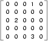
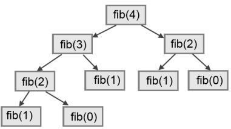

20. Dictionaries¶
All of the compound data types we have studied in detail so far — strings, lists, and tuples — are sequence types, which use integers as indices to access the values they contain within them.
Dictionaries are yet another kind of compound type. They are Python’s built-in mapping type. They map keys, which can be any immutable type, to values, which can be any type (heterogeneous), just like the elements of a list or tuple. In other languages, they are called associative arrays since they associate a key with a value.
As an example, we will create a dictionary to translate English words into Spanish. For this dictionary, the keys are strings.
One way to create a dictionary is to start with the empty dictionary and add
key:value pairs. The empty dictionary is denoted {}:
>>> eng2sp = {} >>> eng2sp["one"] = "uno" >>> eng2sp["two"] = "dos"
The first assignment creates a dictionary named eng2sp; the other
assignments add new key:value pairs to the dictionary. We can print the current
value of the dictionary in the usual way:
>>> print(eng2sp) {"two": "dos", "one": "uno"}
The key:value pairs of the dictionary are separated by commas. Each pair contains a key and a value separated by a colon.
Hashing
The order of the pairs may not be what was expected. Python uses complex algorithms, designed for very fast access, to determine where the key:value pairs are stored in a dictionary. For our purposes we can think of this ordering as unpredictable.
You also might wonder why we use dictionaries at all when the same concept of mapping a key to a value could be implemented using a list of tuples:
>>> {"apples": 430, "bananas": 312, "oranges": 525, "pears": 217}
{'pears': 217, 'apples': 430, 'oranges': 525, 'bananas': 312}
>>> [('apples', 430), ('bananas', 312), ('oranges', 525), ('pears', 217)]
[('apples', 430), ('bananas', 312), ('oranges', 525), ('pears', 217)]
The reason is dictionaries are very fast, implemented using a technique called hashing, which allows us to access a value very quickly. By contrast, the list of tuples implementation is slow. If we wanted to find a value associated with a key, we would have to iterate over every tuple, checking the 0th element. What if the key wasn’t even in the list? We would have to get to the end of it to find out.
Another way to create a dictionary is to provide a list of key:value pairs using the same syntax as the previous output:
>>> eng2sp = {"one": "uno", "two": "dos", "three": "tres"}
It doesn’t matter what order we write the pairs. The values in a dictionary are accessed with keys, not with indices, so there is no need to care about ordering.
Here is how we use a key to look up the corresponding value:
>>> print(eng2sp["two"]) 'dos'
The key "two" yields the value "dos".
Lists, tuples, and strings have been called sequences, because their items occur in order. The dictionary is the first compound type that we’ve seen that is not a sequence, so we can’t index or slice a dictionary.
20.1. Dictionary operations¶
The del statement removes a key:value pair from a dictionary. For example,
the following dictionary contains the names of various fruits and the number of
each fruit in stock:
>>> inventory = {"apples": 430, "bananas": 312, "oranges": 525, "pears": 217} >>> print(inventory) {'pears': 217, 'apples': 430, 'oranges': 525, 'bananas': 312}
If someone buys all of the pears, we can remove the entry from the dictionary:
>>> del inventory["pears"] >>> print(inventory) {'apples': 430, 'oranges': 525, 'bananas': 312}
Or if we’re expecting more pears soon, we might just change the value associated with pears:
>>> inventory["pears"] = 0 >>> print(inventory) {'pears': 0, 'apples': 430, 'oranges': 525, 'bananas': 312}
A new shipment of bananas arriving could be handled like this:
>>> inventory["bananas"] += 200 >>> print(inventory) {'pears': 0, 'apples': 430, 'oranges': 525, 'bananas': 512}
The len function also works on dictionaries; it returns the number
of key:value pairs:
>>> len(inventory) 4
20.2. Dictionary methods¶
Dictionaries have a number of useful built-in methods.
The keys method returns what Python 3 calls a view of its underlying keys.
A view object has some similarities to the range object we saw earlier —
it is a lazy promise, to deliver its elements when they’re needed by the
rest of the program. We can iterate over the view, or turn the view into a
list like this:
This produces this output:
Got key three which maps to value tres Got key two which maps to value dos Got key one which maps to value uno ['three', 'two', 'one']
It is so common to iterate over the keys in a dictionary that we can
omit the keys method call in the for loop — iterating over
a dictionary implicitly iterates over its keys:
The values method is similar; it returns a view object which can be turned
into a list:
>>> list(eng2sp.values()) ['tres', 'dos', 'uno']
The items method also returns a view, which promises a list of tuples — one
tuple for each key:value pair:
>>> list(eng2sp.items()) [('three', 'tres'), ('two', 'dos'), ('one', 'uno')]
Tuples are often useful for getting both the key and the value at the same time while we are looping:
This produces:
Got three that maps to tres Got two that maps to dos Got one that maps to uno
The in and not in operators can test if a key is in the dictionary:
>>> "one" in eng2sp True >>> "six" in eng2sp False >>> "tres" in eng2sp # Note that 'in' tests keys, not values. False
This method can be very useful, since looking up a non-existent key in a dictionary causes a runtime error:
>>> eng2esp["dog"] Traceback (most recent call last): ... KeyError: 'dog'
20.3. Aliasing and copying¶
As in the case of lists, because dictionaries are mutable, we need to be aware of aliasing. Whenever two variables refer to the same object, changes to one affect the other.
If we want to modify a dictionary and keep a copy of the original, use the
copy method. For example, opposites is a dictionary that contains pairs
of opposites:
>>> opposites = {"up": "down", "right": "wrong", "yes": "no"} >>> alias = opposites >>> copy = opposites.copy() # Shallow copy
alias and opposites refer to the same object; copy refers to a
fresh copy of the same dictionary. If we modify alias, opposites is
also changed:
>>> alias["right"] = "left" >>> opposites["right"] 'left'
If we modify copy, opposites is unchanged:
>>> copy["right"] = "privilege" >>> opposites["right"] 'left'
20.4. Sparse matrices¶
We previously used a list of lists to represent a matrix. That is a good choice for a matrix with mostly nonzero values, but consider a sparse matrix like this one:

The list representation contains a lot of zeroes:
matrix = [[0, 0, 0, 1, 0], [0, 0, 0, 0, 0], [0, 2, 0, 0, 0], [0, 0, 0, 0, 0], [0, 0, 0, 3, 0]]
An alternative is to use a dictionary. For the keys, we can use tuples that contain the row and column numbers. Here is the dictionary representation of the same matrix:
>>> matrix = {(0, 3): 1, (2, 1): 2, (4, 3): 3}
We only need three key:value pairs, one for each nonzero element of the matrix. Each key is a tuple, and each value is an integer.
To access an element of the matrix, we could use the [] operator:
>>> matrix[(0, 3)] 1
Notice that the syntax for the dictionary representation is not the same as the syntax for the nested list representation. Instead of two integer indices, we use one index, which is a tuple of integers.
There is one problem. If we specify an element that is zero, we get an error, because there is no entry in the dictionary with that key:
>>> matrix[(1, 3)] KeyError: (1, 3)
The get method solves this problem:
>>> matrix.get((0, 3), 0) 1
The first argument is the key; the second argument is the value get should
return if the key is not in the dictionary:
>>> matrix.get((1, 3), 0) 0
get definitely improves the semantics of accessing a sparse matrix. Shame
about the syntax.
20.5. Memoization¶
If you played around with the fibo function from the chapter on recursion, you
might have noticed that the bigger the argument you provide, the longer the
function takes to run. Furthermore, the run time increases very quickly. On one
of our machines, fib(20) finishes instantly, fib(30) takes
about a second, and fib(40) takes roughly forever.
To understand why, consider this call graph for fib with
n = 4:

A call graph shows some function frames (instances when the function has
been invoked), with lines connecting each frame to
the frames of the functions it calls. At the top of the graph, fib
with n = 4 calls fib with n = 3 and n = 2. In turn,
fib with n = 3 calls fib with n = 2 and n = 1.
And so on.
Count how many times fib(0) and fib(1) are called. This is
an inefficient solution to the problem, and it gets far worse as the argument
gets bigger.
A good solution is to keep track of values that have already been computed by
storing them in a dictionary. A previously computed value that is stored for
later use is called a memo. Here is an implementation of fib
using memos:
The dictionary named alreadyknown keeps track of the Fibonacci numbers we
already know. We start with only two pairs: 0 maps to 1; and 1 maps to 1.
Whenever fib is called, it checks the dictionary to determine if it
contains the result. If it’s there, the function can return immediately without
making any more recursive calls. If not, it has to compute the new value. The
new value is added to the dictionary before the function returns.
Using this version of fib, our machines can compute
fib(100) in an eyeblink.
>>> fib(100) 354224848179261915075
20.6. Counting letters¶
In the exercises in Chapter 8 (Strings) we wrote a function that counted the number of occurrences of a letter in a string. A more general version of this problem is to form a frequency table of the letters in the string, that is, how many times each letter appears.
Such a frequency table might be useful for compressing a text file. Because different letters appear with different frequencies, we can compress a file by using shorter codes for common letters and longer codes for letters that appear less frequently.
Dictionaries provide an elegant way to generate a frequency table:
>>> letter_counts = {} >>> for letter in "Mississippi": ... letter_counts[letter] = letter_counts.get(letter, 0) + 1 ... >>> letter_counts {'M': 1, 's': 4, 'p': 2, 'i': 4}
We start with an empty dictionary. For each letter in the string, we find the current count (possibly zero) and increment it. At the end, the dictionary contains pairs of letters and their frequencies.
It might be more appealing to display the frequency table in alphabetical order. We
can do that with the items and sort methods:
>>> letter_items = list(letter_counts.items()) >>> letter_items.sort() >>> print(letter_items) [('M', 1), ('i', 4), ('p', 2), ('s', 4)]
Notice in the first line we had to call the type conversion function list.
That turns the promise we get from items into a list, a step that is
needed before we can use the list’s sort method.
20.7. Glossary¶
- call graph
- A graph consisting of nodes which represent function frames (or invocations), and directed edges (lines with arrows) showing which frames gave rise to other frames.
- dictionary
- A collection of key:value pairs that maps from keys to values. The keys can be any immutable value, and the associated value can be of any type.
- immutable data value
- A data value which cannot be modified. Assignments to elements or slices (sub-parts) of immutable values cause a runtime error.
- key
- A data item that is mapped to a value in a dictionary. Keys are used to look up values in a dictionary. Each key must be unique across the dictionary.
- key:value pair
- One of the pairs of items in a dictionary. Values are looked up in a dictionary by key.
- mapping type
- A mapping type is a data type comprised of a collection of keys and associated values. Python’s only built-in mapping type is the dictionary. Dictionaries implement the associative array abstract data type.
- memo
- Temporary storage of precomputed values to avoid duplicating the same computation.
- mutable data value
- A data value which can be modified. The types of all mutable values are compound types. Lists and dictionaries are mutable; strings and tuples are not.
20.8. Exercises¶
Write a program that reads a string and returns a table of the letters of the alphabet in alphabetical order which occur in the string together with the number of times each letter occurs. Case should be ignored. A sample output of the program when the user enters the data “ThiS is String with Upper and lower case Letters”, would look this this:
a 2 c 1 d 1 e 5 g 1 h 2 i 4 l 2 n 2 o 1 p 2 r 4 s 5 t 5 u 1 w 2
Give the Python interpreter’s response to each of the following from a continuous interpreter session:
>>> d = {"apples": 15, "bananas": 35, "grapes": 12} >>> d["bananas"]
>>> d["oranges"] = 20 >>> len(d)
>>> "grapes" in d
>>> d["pears"]
>>> d.get("pears", 0)
>>> fruits = list(d.keys()) >>> fruits.sort() >>> print(fruits)
>>> del d["apples"] >>> "apples" in d
Be sure you understand why you get each result. Then apply what you have learned to fill in the body of the function below:
1 2 3 4 5 6 7 8 9 10
def add_fruit(inventory, fruit, quantity=0): return # Make these tests work... new_inventory = {} add_fruit(new_inventory, "strawberries", 10) test("strawberries" in new_inventory) test(new_inventory["strawberries"] == 10) add_fruit(new_inventory, "strawberries", 25) test(new_inventory["strawberries"] == 35)
Write a program called
alice_words.pythat creates a text file namedalice_words.txtcontaining an alphabetical listing of all the words, and the number of times each occurs, in the text version of Alice’s Adventures in Wonderland. (You can obtain a free plain text version of the book, along with many others, from http://www.gutenberg.org.) The first 10 lines of your output file should look something like this:Word Count ======================= a 631 a-piece 1 abide 1 able 1 about 94 above 3 absence 1 absurd 2
How many times does the word
aliceoccur in the book?What is the longest word in Alice in Wonderland? How many characters does it have?